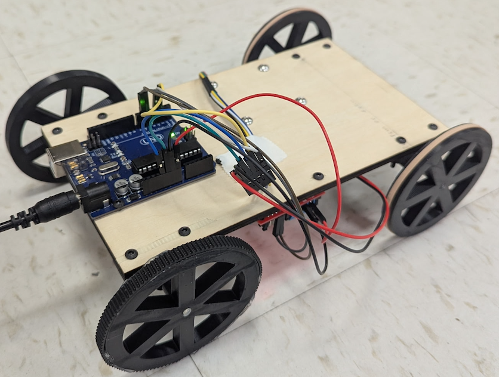
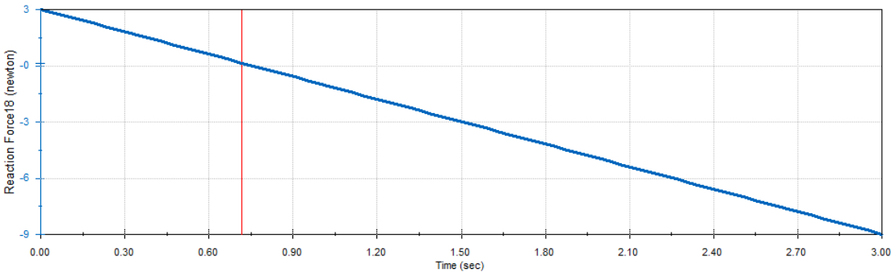
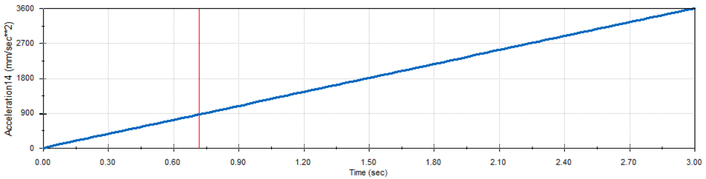
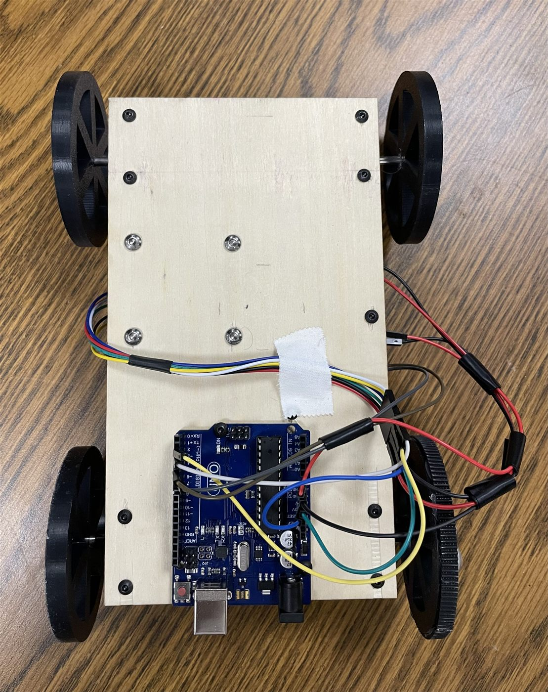
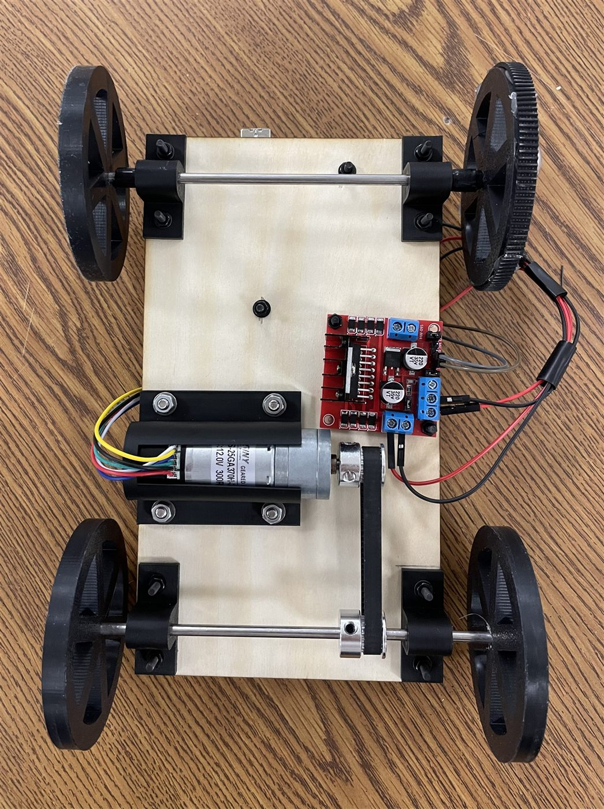

Spring 2026 · Dynamics
Cart - Beam Balancing

Objective
Cart traveling 9 feet back and forth in 17.8 seconds with the beam staying perfectly stable
The goal of this project was to design a cart capable of transporting a 1-foot vertical aluminum bar across a variable distance of 5 to 10 feet back and forth without it toppling. The bar was placed on a horizontal platform, supported at its bottom face only. No glues, fasteners, or side supports were allowed — just physics.
Simulation
Modeling tipping acceleration in SolidWorks
The ultimate objective was to minimize the time required to transport the bar. To do so, we first simulated multiple design concepts in SolidWorks. Initially, we simulated the multibody system without wheels to get a sense of the maximum acceleration the cart could handle. Basic rectangular shapes were used for the track, cart, and prisms, assembled with one degree of freedom that dropped to zero once a motor was introduced.
Using the motion analysis feature in SolidWorks, we generated both an acceleration plot and a reaction force plot to analyze the system's behavior.


From the reaction force plot, the moment the reaction force dropped to zero marked exactly when the prism's tipping point lost contact with the cart. By analyzing the acceleration plot, at the exact time when the reaction force reached 0N, we found our value to be 0.8 m/s² at 0.75 seconds.
To make sure these results actually made sense, we compared them to the theoretical calculations that we got from a Free-Body Diagram. By solving for when the net moment about the tipping point equals zero, we got a tipping acceleration of 0.8175 m/s². The simulated value aligns within 2% of the theoretical value, validating the accuracy of the model.
The simulation was then repeated with the prism tilted at 45 degrees, which shifted the base distribution along the tilting axis and noticeably changed the results, giving a higher maximum acceleration of 1.152 m/s² at 0.96 seconds — confirming that the angled orientation allowed the cart to move faster before tipping became a concern.
We then introduced wheels into the simulation, with each group member modeling a different size ranging from 1 to 4 inches. The goal was to bring the reaction force of the bar as close to zero as possible, which larger wheels achieved well. However, we opted for a more conservative choice to avoid the jerk that comes with bigger wheels. Taking everything into account, we went with the rotated prism and 3 inch wheels for our final design, giving us the best balance between speed and stability for transporting the bar.
Build
From simulation to prototype


The left figure shows the top of the cart and the right shows the underside.
Once we were happy with the simulation, we moved on to building the actual prototype. The wheels, adapters, and motor holder were all 3D printed, the wood body was laser cut to size, and everything was fastened together using screws, washers, and nuts, with the wheels glued directly to the axle for extra security.
Assembly came with a few unexpected challenges. One wheel wasn't making full contact with the ground due to a warped body, so we hot glued a flat strip around the short side of the wheel to slightly increase its diameter and level things out. We also noticed the axle not connected to the motor was shifting side to side during motion, which we fixed by wrapping electrical tape around it to the approximate width we needed — a simple fix that kept the axle stable while adding minimal friction.
For our trials, the prism was placed within a diamond of pencil marks, and white tape was used to keep the wiring tidy and out of the way. For the 9 foot trial, we added rubber bands to the front two wheels for better traction and powered the cart using a 12V external power supply.
Code
Trapezoidal velocity profile
The Arduino code was built around a trapezoidal velocity profile, meaning the cart ramped up to speed, held it steady, then slowed back down in a controlled manner. We used buffer times of 0.75 seconds for both the ramp up and ramp down phases, and included a two second pause before reversing to give the prism time to stabilize. Shorter wait times technically worked, but our success rate was highest at two seconds so we prioritized keeping the prism upright over shaving off a few seconds.
The other key decision in our code was the PWM value, which controls motor speed by toggling the signal on and off. Although our theoretical tipping acceleration gave us an upper bound, real-world factors like mechanical constraints and environmental conditions meant we had to be more conservative. After testing, we landed on a PWM of 175, which turned out to be the sweet spot — higher values kept the cart moving well but caused the prism to topple, highlighting the important distinction between what the cart can handle and what the prism can.
Demo